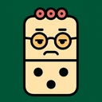
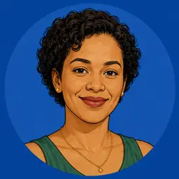
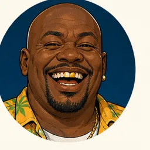

YaadDominoesBeat di table.
Authentic table concept
Player feedback prototype
Player feedback prototype

Miss Cherry
Ras K
PLAYING

Nadia
PLAYING

You · Candy
NADIA · PASS
Concept only — tap a bone in your hand to preview the left/right choice. Switch hand states above to judge the table with both a short and a crowded chain.